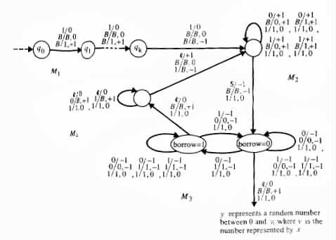

The study of nonprobabilistic computations employed the abstract models of deterministic and nondeterministic Turing transducers. For the study of probabilistic computations we will use similar abstract models, called probabilistic Turing transducers.
Informally, a probabilistic Turing transducer is a Turing transducer that views nondeterminism as randomness. Formally, a probabilistic Turing transducer is a Turing transducer M = <Q, S, G, D, d, q0, B, F> whose computations are defined in the following manner.
A sequence C of the moves of M is said to be a computation if the two conditions below hold.
By definition, a probabilistic Turing transducer might have both accepting computations and nonaccepting computations on a given input.
Each computation of a probabilistic Turing transducer is similar to that of a nondeterministic Turing transducer, the only exception arising upon reaching a configuration from which more than one move is possible. In such a case, the choice between the possible moves is made randomly, with an equal probability of each move occurring.
The function that a probabilistic Turing transducer computes and its error probability are defined similarly to probabilistic programs. Probabilistic Turing machines are defined similarly to probabilistic Turing transducers.
A probabilistic Turing machine M is said to accept a language L if
Example 6.3.1 Figure 6.3.1
|

|
M starts each computation by employing M1 for recording the value of k. Then M repeatedly employs M2, M3, and M4 for generating a random string y of length |x|, and checking whether y represents an integer no greater than v. M terminates its subcomputation successfully if and only if it finds such a string y within k tries.
M1 records the value of k in unary in the second auxiliary work tape of M. In the first auxiliary work tape of M, M2 generates a random string y of length |x| over {0, 1}. M3 checks whether x represents a number greater than the one y represents. M3 performs the checking by simulating a subtraction of the corresponding numbers. M4 erases the string y that is stored on the first auxiliary work tape.
The number of executed cycles M2, M3, M4 is controlled by the length k of the string 1 · · · 1 that is stored on the second auxiliary work tape. At the end of each cycle the string shrinks by one symbol.
The probability that M2 will generate a string that represents a number between 0 and v is (v + 1)/2|x| ³ 1/2. The probability that such a string will be generated in k cycles is
The sum of these probabilities is equal to
The probabilistic Turing machine in the following example is, in essence, a probabilistic pushdown automaton that accepts a non-context-free language. This automaton can be modified to make exactly n + 2 moves on each input of length n, whereas each one auxiliary-work-tape, nonprobabilistic Turing machine seems to require more than n + 2 time to recognize the language.
Example 6.3.2 The one auxiliary-work-tape, probabilistic Turing machine M of Figure 6.3.2
M on any given input w starts its computation by choosing randomly some number r between 1 and 2k. It does so by moving from the initial state q0 to the corresponding state qr. In addition, M writes Z0 on its auxiliary work tape. Then M moves its auxiliary work-tape head ri positions to the right for each symbol ai that it reads, and ri positions to the left for each symbol bi that it reads.
At the end of each computation, the auxiliary work-tape head is located (n(a1) - n(b1))r + (n(a2) - n(b2))r2 + · · · + (n(ak) - n(bk))rk positions to the right of Z0, where n(c) denotes the number of times the symbol c appears in w. If the head is located on Z0, then the input is accepted. Otherwise, the input is rejected.
By construction, M accepts each input w from the language L. Alternatively, M might also accept some strings not in L with probability e(x) = e < 1/2, where e = (k - 1)/(2k).
The equality e = (k - 1)/(2k) holds because if w is not in L then n(ai) - n(bi) 0 for
at least one i. In such a case, the equation (n(a1) - n(b1))r + · · · + (n(ak) - n(bk))rk = 0
can be satisfied by at most k - 1 nonzero values of r. However, there are 2k possible
assignments for r. As a result the probability that r will get a value that satisfies the
equation is no greater than e = (k - 1)/(2k).
0 for
at least one i. In such a case, the equation (n(a1) - n(b1))r + · · · + (n(ak) - n(bk))rk = 0
can be satisfied by at most k - 1 nonzero values of r. However, there are 2k possible
assignments for r. As a result the probability that r will get a value that satisfies the
equation is no greater than e = (k - 1)/(2k).
The bound e on the error probability e(x) can be reduced to any desirable value, by allowing r to be randomly assigned with a value from {1, ¼, ék/eù}.
M takes no more than T(n) = (2k)kn + 2 moves on input of length n. M can be
modified to make exactly T(n) = n + 2 moves by recording values modulo (2k)k in the
auxiliary work tape. In such a case, smaller intermediate values are stored in the
finite-state control of M. 
![[PICT]](draw-pic/theory-bk-six-6-3-2.jpg)